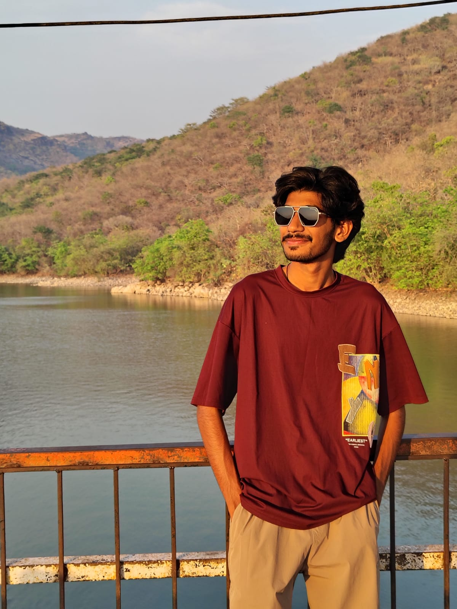

Arsh Shaikh
I reconstruct truth from fragments. Specializing in physical evidence recovery, crime scene reconstruction, and high-level forensic analysis. Extracting actionable intelligence from complex crime scenes, leaving no trace unexamined.
Operational Archive
01Forensic Intelligence Analyst
Conducting advanced forensic intelligence, analyzing physical trace evidence, and synthesizing multi-source forensic data for national security operations. Leading deep-dive crime scene investigations.
Forensic Expert
Spearheaded physical evidence recovery and crime scene analysis for high-profile homicide cases. Utilized advanced blood spatter analysis and trace evidence collection to secure physical evidence that led to successful convictions.
Academic Credentials
02MD Forensic Medicine
Advanced postgraduate residency focusing on forensic pathology, clinical forensic medicine, and medical jurisprudence. Extensive experience in complex autopsy and medicolegal casework.
Core Methodology
03Crime Scene Reconstruction
Accurate spatial recreation of events based on physical evidence and bloodstain patterns, establishing an undeniable sequence of events.
Trace Evidence Analysis
Microscopic examination of hair, fibers, gunshot residue, and soil samples to connect suspects definitively to the scene.
Pathology Integration
Synthesizing autopsy findings and physiological evidence for rigorous case building, bridging the gap between biology and law.